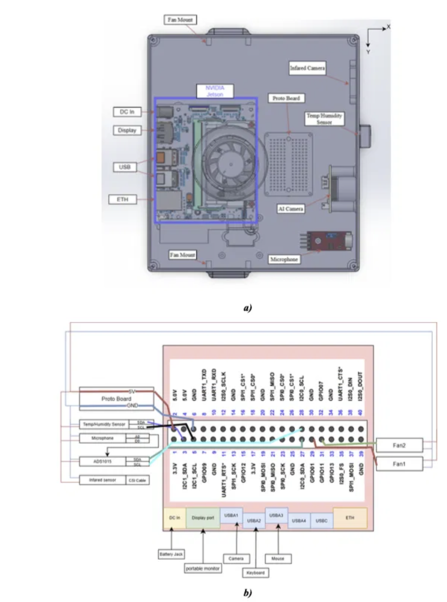

Knee-deep in the kelp survey
A coastal cohort wades into the shallows to sample where land meets sea, logging conditions before the first filter ever fills.

Stories from the field
Follow our students, educators, and partners as they read the living world one sample at a time, where science, education, and stewardship meet.
What you can do with a sample
Environmental DNA turns a scoop of seawater, soil, or air into a record of the life that passed through it. Here are four ways our students and partners put that idea to work, in the field, on the beach, in the forest, and at the frontier of new medicine.

Along the bays and estuaries of San Diego, students trade the textbook for a water-quality probe and a filter funnel. They wade into the shallows, log temperature and salinity, then draw the water that carries the DNA every passing animal leaves behind. Back at the bench, that eDNA is pulled onto a membrane, and a sample that looked like nothing becomes a census of the whole ecosystem.
It's the heart of a growing global citizen-scientist movement: the tools of genomics don't belong to one distant lab, they belong wherever a curious person is willing to look closely. One team profiles a tide-pool tray teeming with urchins, kelp, and sea stars; another filters harbor water beside the sailboats; a third labels vials and runs the extraction.


On a bright morning at Venice Beach, three researchers set up what used to require a building: a laptop, a palm-sized sequencer, and a solar generator on the sand, a few steps from the surf. Water goes in as an ordinary sample; within hours, the DNA of everything living just offshore scrolls across the screen.
No shipping samples to a distant facility, no waiting weeks for results, the ocean is read on the spot, powered by the sun. That is what makes the science portable enough to reach any coastline, classroom, or community: the whole workflow, from collection to sequence, travels in a single bag.

Not every ecosystem sits beside a lab bench, so Joey and Jaimin built the BioScope: a rugged, tripod-mounted sensor pod that watches, listens, and measures on its own. Designed as a senior capstone and aimed at reforestation efforts in Costa Rica, it turns a patch of regrowing forest into a continuous stream of ecological data.
Cameras and audio capture the animals moving through, onboard AI flags what it sees and hears, and environmental sensors record the conditions they live in. Paired with eDNA sampling, a device like this can watch a whole landscape recover, one day at a time.

Here is the part that surprises people. The same environmental DNA that maps a reef is becoming raw material for a new kind of drug design. Modern AI models can effectively "dream up" new proteins, and they can be tuned toward the proteins of a particular ecosystem, the exact place a sample came from. In that sense the world's genomic diversity becomes a painter's palette: the richer and more representative the data, the more the models have to work with.
The applications are already concrete. In one collaboration with Dr. Michael Levin's lab at Tufts University, the team explored an AI-designed cardiac peptide aimed at gap-junction proteins, the connexin channels that carry electrical and metabolic signals between heart cells and are implicated in arrhythmias after cardiac events.


If eDNA is this valuable, the communities who steward these ecosystems must be empowered to generate their own data, and own it, so the benefits flow back to the places and people the samples came from.
Dispatches
Every story below began with a single sample and a curious question. Together they map how genomic science is reaching new hands, new rivers, and new communities.
A coastal cohort wades into the shallows to sample where land meets sea, logging conditions before the first filter ever fills.

Two students keep watch over a glowing screen as base pairs accumulate, turning a tent into a working genomics lab.

An eDNA match flagged an amphibian thought to be absent from the valley, sending the team back to verify a hidden survivor.

Families gather as students present their findings beside paintings and field notes, sharing the science back with the place that made it.
I used to think science happened somewhere far away. Now I know it happens wherever I'm willing to look closely.
Marisol, age 16 · coastal pilot cohort, Los Angeles
Keep following
New cohorts launch each season across oceans, freshwater, and forests. Follow the journey, bring the program to your classroom, or partner with us to widen the network of young stewards reading Earth's living library.